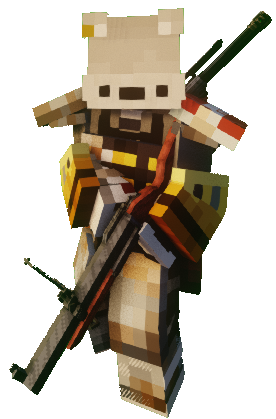
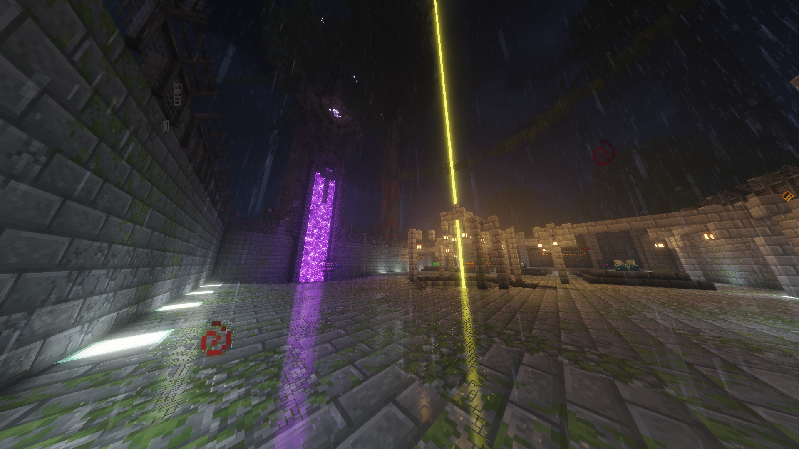

SERVER ONLINE
WORLD Z PROYECT AETERNA
¿Tienes lo necesario para sobrevivir al fin del mundo?
Adéntrate en un páramo desolado donde la sociedad ha colapsado. Si bien las hordas de no muertos acechan en cada rincón, pronto descubrirás una verdad más oscura: el peligro más letal son los otros supervivientes. Sobrevivir requiere más que munición; requiere estrategia, alianzas de hierro y la voluntad de apretar el gatillo antes que tu enemigo.
Contenido del Servidor:
LO QUE TE ESPERA EN EL PÁRAMO
- Arsenal y Amenazas: Explora ciudades abandonadas y enfréntate a una brutal variedad de enemigos con una amplia selección de armamento avanzado.
- Economía y Progresión: Desbloquea llaves, kits de supervivencia y rangos exclusivos utilizando los puntos que ganes dominando eventos.
- Apoya el Proyecto: Si deseas acelerar tu progreso, adquiere rangos, kits y llaves directamente desde nuestra tienda oficial.
MECÁNICAS Y MODOS DE JUEGO
- Sistema de Suministros: Saquea cajas de botín. El 90% se consigue de forma gratuita jugando. Para equiparte rápido, la tienda ofrece acceso inmediato a llaves.
- Supervivencia y Clanes: La unión hace la fuerza. Forja tu clan, reclama territorio y aplasta a tus rivales en los eventos KOTH.
-
Modo Competitivo (Estilo CoD): Un mundo dedicado al combate puro.
- Duelo por Equipos, Todos contra Todos y Vs. Bots.
- Crea hasta 10 clases personalizadas o usa clases predefinidas tácticas.
